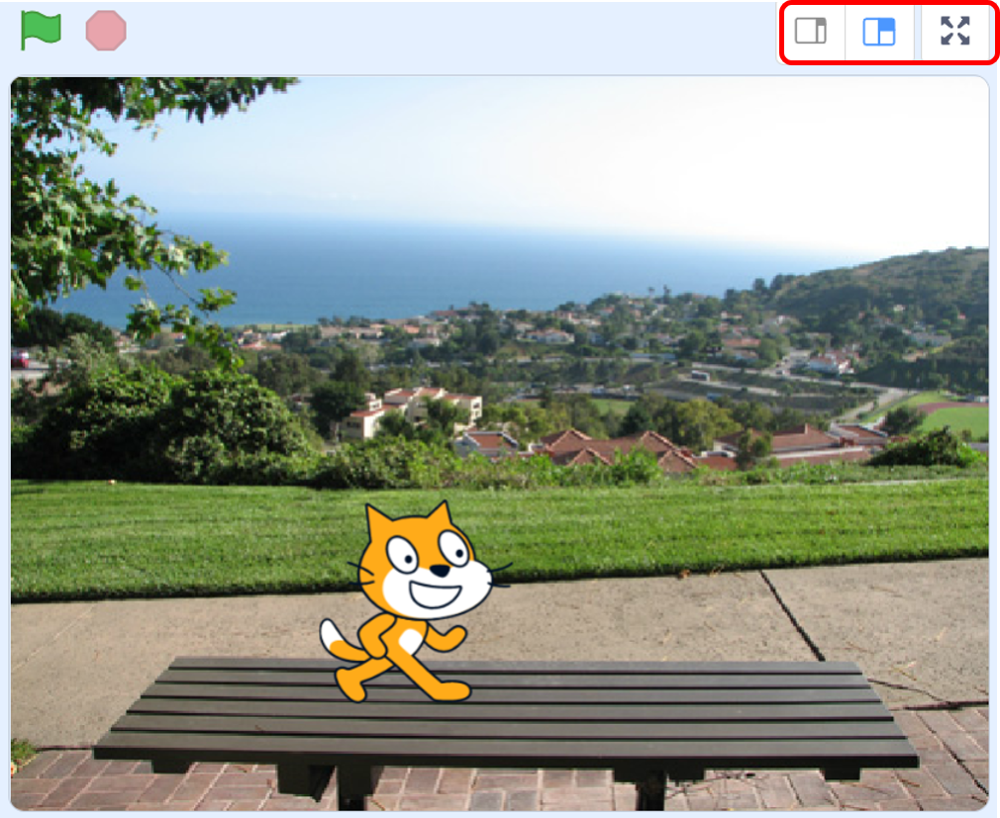

|
|
|---|
 舞 臺
舞 臺
「舞臺」是Scratch程序運行的主要界面，也是提供給角色表演的地方。
每個角色可以換上不同的造型在舞臺上進進出出，來回穿梭，或走或跳，互相對話、肢體碰撞…一直到程式幕落結束。這整個舞臺上的演出，就是一個專案的完整執行。它就像是皮影戲裡最前面的那塊白色布幕，只是這舞臺不是在皮偶的前面，而是在角色的後面，而且它除了白色以外，還能够是各種五顏六色的圖片，我們還可以把它當作一張繪圖紙，在上面塗鴉畫畫。
而除了角色可以在它上面任意移動外，它還可以放置腳本、背景和聲音，和角色很類似，但由於舞臺背景是不會動的，因此它有一些積木功能是無法使用的，比如動作類積木、尺寸大小積木......等。
任何一個專案一定要有舞臺，否則，角色就無法運行了。而雖然角色可以在舞臺上自由移動，但都無法移動到舞臺的後面，因為舞臺永遠位於角色的後面（圖層的最底層）。
在編輯程式的右上方窗格就是舞台區窗格（如右圖），它有三種不同尺寸的呈現方式：
⑴常規－普通模式：舞台為480×360像素。比例是 4:3。
⑵小舞台：它使舞台的尺寸更小，以提供更多的編寫腳本的空間。大小是 240x180像素（正常尺寸的 ¼）。可以透過位於舞臺右上角的按鍵來切換。
⑶全螢幕：讓播放器適合網頁瀏覽器的目前解析度。
不論是以上述哪種尺寸來呈現舞臺，它的實際大小都是恆定的，寬是 480像素，高是 360像素。而在普通模式和小舞台的狀態下，專案都屬於可編輯的模式，但在全螢幕時，專案就無法編輯了。